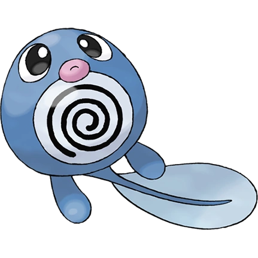
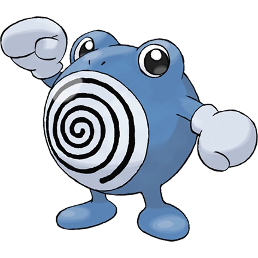

KANTO POKÉDEX
← 포켓몬 목록으로
#060

발챙이
물
올챙이 포켓몬
특성
습기
저수
쓱쓱 (숨겨진 특성)
울음소리
포획률 & 성비
포획률
255 / 255
성비
♂ 50%
50% ♀
생태
소용돌이 모양인 내장이 비칠 정도로 얇은 피부이지만 날카로운 이빨을 튕겨내는 탄력을 지니고 있다. 슈륙챙이로 진화한다.
진화
발챙이
→
슈륙챙이

→
강챙이
← #059 윈디
#061 슈륙챙이 →